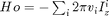
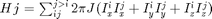

FileName : generate_free_evolH
Contents
Description
This program calculates the Free Evolution hamiltonian or the Hamiltonian in absence of Radio Frequency Pulse
function [H_free_evo] = generate_free_evolH(spinlist,v,J)
global gra
Ix=gra.Ix; Iy=gra.Iy; Iz=gra.Iz;
Generating Zeeman Hamiltonian
We are generating 
Ho=zeros(2^sum(spinlist)); for k=1:length(v) H_off = -2*pi*v(k)*Iz(:,:,k); Ho=Ho+H_off; end
Generating J-coupling Hamiltonian
We are generating 
Hj=zeros(2^sum(spinlist)); for j=1:length(spinlist) spinlistsum(j)=sum(spinlist(1:j)); end for l=1:length(spinlist) if(l==1) for k=1:spinlist(l) for n=1:spinlist(l) H_coup = 2*pi*J(k,n)*(Ix(:,:,k)*Ix(:,:,n) + Iy(:,:,k)*Iy(:,:,n) + Iz(:,:,k)*Iz(:,:,n)); Hj=Hj+H_coup; end end else for k=spinlist(l-1)+1:spinlistsum(l) for n=spinlist(l-1)+1:spinlistsum(l) H_coup = 2*pi*J(k,n)*(Ix(:,:,k)*Ix(:,:,n) + Iy(:,:,k)*Iy(:,:,n) + Iz(:,:,k)*Iz(:,:,n)); Hj=Hj+H_coup; end end end end
Total Internal Hamiltonian
H_free_evo=Ho+Hj;